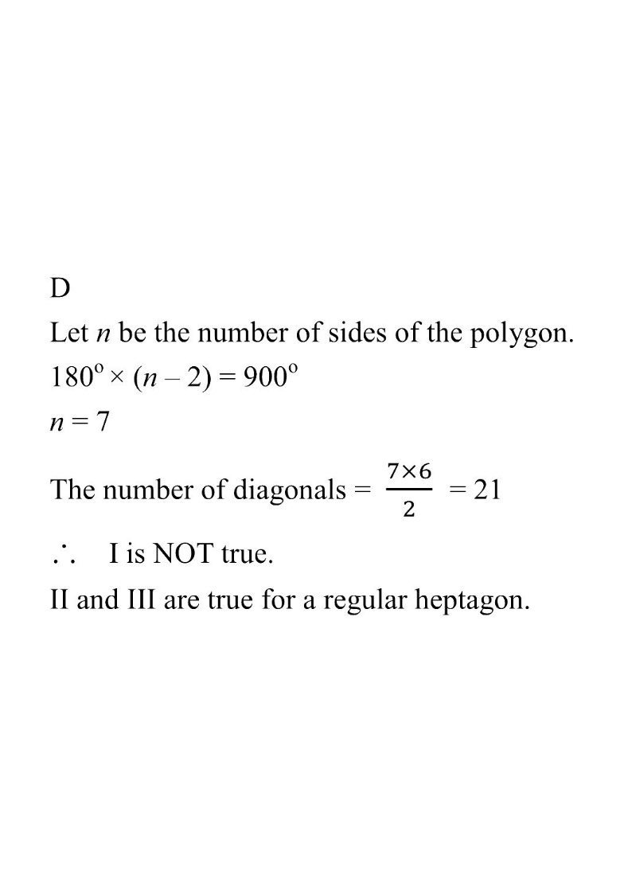

Q20. If the sum of the interior angles of a regular polygon is $900^\circ$, which of the following is/are true?
I. The number of diagonals of the polygon is 7.
II. The number of folds of rotational symmetry of the polygon is 7.
III. The number of axes of reflectional symmetry of the polygon is 7.

Let $n$ be the number of sides of the regular polygon.
The sum of the interior angles of an $n$-gon is
$$180^\circ \times (n-2).$$
Given the sum is $900^\circ$:
$$180(n-2)=900 \;\Rightarrow\; n-2=5 \;\Rightarrow\; n=7.$$
So the polygon is a regular heptagon (7 sides).
The number of diagonals of an $n$-gon is $\displaystyle \frac{n(n-3)}{2}$.
$$\frac{7\times 6}{2}=21 \ne 7.$$
So statement I is NOT true.
Note: the working in the original solution wrote $\frac{7\times 6}{2}=21$ — that is the count of all diagonals,
not 7.
A regular $n$-gon has rotational symmetry of order $n$:
$$\text{order of rotational symmetry}=n=7.$$
The polygon maps onto itself under rotations of $360^\circ/7 \approx 51.43^\circ$.
So statement II is true.
A regular $n$-gon has exactly $n$ axes of reflectional symmetry.
$$\text{number of axes of symmetry}=7.$$
So statement III is true.
Only statements II and III are true.
Question. The sum of the interior angles of a regular polygon is \(1260^\circ\). Which of the following are true? I. The number of diagonals is \(27\). II. The number of folds of rotational symmetry is \(9\). III. The number of axes of reflectional symmetry is \(9\).